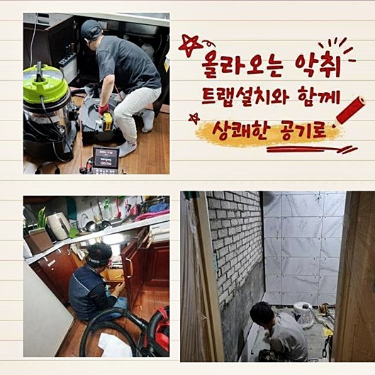
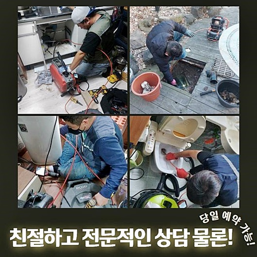
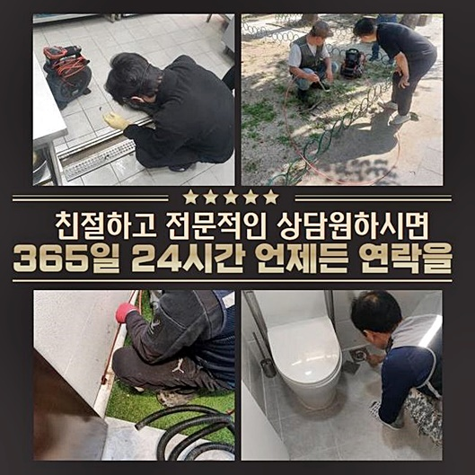
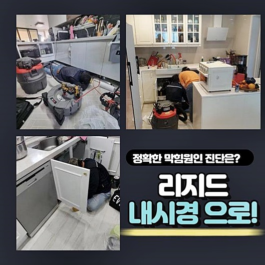
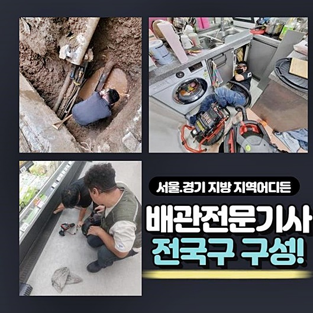
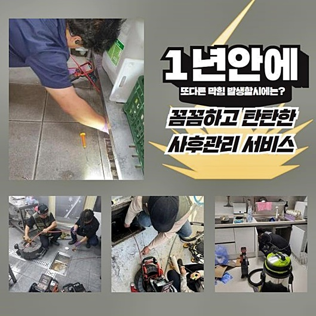
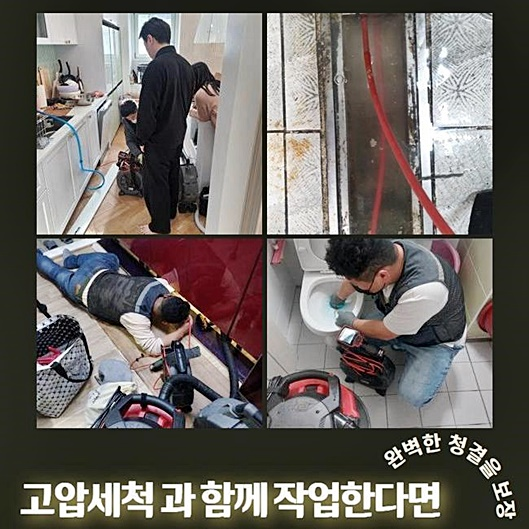

🏠 고양시 오금동씽크대역류 창릉동 하수구뚫는곳 수리업체
고양 싱크대막힘 전문 시공 후기

📋 작업 개요
- 위치: 고양
- 서비스 유형: 싱크대막힘, 하수구막힘, 배관막힘, 역류해결, 뚫는업체, 배관청소, 고압세척
- 작업 일시: 2024. 6. 21. 9:52
- 업체명: 하수구수사대 (010-5615-2118)
🔍 문제 상황
고양시 오금동씽크대역류 창릉동 하수구뚫는곳 수리업체
화장실이나 싱크대처럼 일상생활에 물을 계속해서 틀고 폐기하는 장소에선 물이 막히는 상황도 잦게 일어나는데 그 사유를 들여다보면 신경쓰지 않고 흘려버린 남은 음식물과 재료 등으로 인해 촉발되는 일이 비일비재 합니다
이처럼 일반적이면서 확고한 근거에 의해 직면하는 현상이지만 해결 절차의 복잡도는 심각하게 난감하긴 합니다
하수구 전용 청소도구를 시도해보아도 실마리를 찾지 못하는 경우라면 속히 숙련공의 청소 서비스를 받아보셔야 하는데요
방치만 해두다 보면 단순한 막힘에만 끝나는 것이 아니고 다른 층에도 크고 작은 곤란함을 주게되는 어려운 일로 꼬이게 됩니다
이번에 다뤘던 막힘 작업지 역시 고비를 맞이한 상태로 신속한 대응이 필요했습니다
현장 진단을 도와드리니 딱봐도 낡아보이는 곳에다 이미 고객님께서 노력을 기울여 보셨지만 성공하지는 못했던 모양입니다
비교적 인과관계가 확실한 막힘을 겪는다면 운 좋게 뚫린다 해도 파이프를 비전문가가 물길을 낸다는 것은 결코 단순하지 않습니다
발달된 전문 도구를 활용해서 사유를 꼬집어내고 타겟을 두고 제거하는게 다가올 미래에 다를 바 없는 재발 문제가 탄생하지 않게 방어하는 자구책에 속합니다
하수시설의 막힘 사고는 시설에 해로운 생활 방식때문에 조성되는데 많은 분들이 별 일 아니라고 여기는 요소들이 쌓이고 쌓여서 여러 곤란을 낳습니다
고체로 응고되는 성질의 기름을 닦아내지 않고 싱크대에 버리거나 각종 육류의 뼈와 같이 통로에 걸릴 듯한 물질을 괜찮겠지 싶은 마음으로 폐기처분하게 됩니다

🔎 원인 분석
💡 전문가 진단: 정밀 진단 장비를 사용하여 슬러지의 고착 여부를 판명하고 타격/세척 작업을 실시했습니다.
바로 현장에 가서 영역을 검토해 봤을 때 역류는 물론이고 불쾌한 악취를 비롯한 어려움을 초래하고 있었죠
피해 범주만 봐도 이용할 당시의 실수로 인해 빚어진 사안이지 않을까 하는 논리적인 의문점을 갖고 사안을 바라봤습니다
하수구의 전반적 동태를 판별을 끝내고 나서 흡입력을 통한 석션기를 투입해서 흡수력으로 봉인이 풀리게 되는지 조사해볼 생각이었어요
허나 현장의 싱크대 하단부에 설치된 하부장이 편안하게 작업하기는 여유공간이 너무 비좁아서 탈거가 들어가야 했습니다
흔쾌히 허가를 내려주셔서 능숙하게 탈거해 주고 석션기 기술을 도입해서 클리닝을 시행할 수 있었네요
딱히 까다롭진 않았기에 세정 단계를 실시하면서 집주인분과 이번 막힘과 연결된 세부적 디테일에 대해서도 주고 받게 되었습니다
이사 후 짐을 펼치신지도 몇 주에 불과하고 막혀버릴까 늘 주의하는 편이라 고의나 부주의하게 물질을 하수구 라인으로 버린 건 결단코 존재하지 않는다며 억울함을 호소하셨어요
전에 살던 임대인이 생각없이 싱크대를 자주 썼을 것이라고 직감적으로 알게 됐죠 책임을 져야하는 위치이니 감당해야 합니다
어떤 부분에 주의하면서 설비를 관리해야 나중에 일정한 통수 장애가 도래하지 않을 건지에 대해 안내했습니다
실제로 가구를 들어내고 보니 결코 간과할 수 없을 정도의 하수가 튀어나온 상태였고 악취까지 풍겼었고 날파리같은 해충이 드글거리고 있었어요
계절도 계절이지만 공기조차 찝찝했는데 만일 모르고 지나갔다면 곰팡이와 같은 심각한 위험한 국면으로 전환되는 벼랑 끝에 서있는 상태였죠

🔧 작업 과정
석션 업무는 완수했지만 눈에 띄게 우수한 양질의 작업까진 못 됐어요
내부의 고인 물과 흡입 노즐로 처리하는 평균에서도 기본선 이하라고 말할 만큼의 내부 오염원들만 내보내진 정도였어요
과잉으로 침적해 버린 상태까지는 아니라면 석션기만 쭉 가동해도 통로가 꽤 관통되곤 하는데 흡입하는 작업으론 실마리가 보이지 않는 형편이라는 점을 알아차리게 되었네요
그리고는 배수관을 관찰해 주는 카메라 장치를 주입시켜서 어느 쪽 라인이 무슨 형태를 띄고 있나 집중 스캔에 들어갔어요
배관용 카메라 하나만 잘 활용해 주면 고장난 쪽을 명시적으로 분석할 수 있다보니 꼭 필요한 단계라고 강조할 만 하답니다
지금 소개하고 있는 작업장은 막힌 단계가 과잉된 상태라서 하수로 통로 자체도 드러나지도 않았었고 기름 범벅의 잔재나 노폐물만 가득 구조에 차 있는 장면이 보이더라고요
이걸 보니 추가적인 점검은 무의미 하다고 평가하고 바로 고성능의 플렉스 샤프트를 투여해서 벽면을 세심하게 닦아갔습니다
이 샤프트라는 기계는 흡수 방법을 통해 관로상의 노폐물을 처리해 가는 단계가 아니라 뱅글뱅글 반복 회전하는 노커를 통해서 직접 닦아내는 식으로 세척에 들어가므로 성능이 대폭 상승합니다
그러나 허술한 배관 컨디션에다 혹시나 스크래치 등의 손상이 들어간다면 깨짐같은 일어나지 않았을 문제까지 속출할 수 있으므로 신중한 조작과 기술력을 발휘해야 할 것입니다
설비의 열화 정도가 높다 싶은 곳에서는 조금만 방심해도 문제가 유발되곤 하므로 계속해서 관찰하면서 클리닝을 진행해야하는 필요성이 있겠죠
이 단계를 거치면서 튀어나오는 기름때와 자잘한 파편들이 다른 배수로로 빠져서 또다른 막힘을 양산하는 사건이 나타나지 않게 석션 업무도 반드시 철저히 이어가야 합니다
다시 수돗물을 틀어서 통수 검사를 처리해 본 결과 아까 생겼었던 배관 속의 정체같은 모습이 싹 사라진걸 알아차릴 수 있었네요
개수대 물의 제거가 성공적으로 달성되는 점을 시각적으로 보신 고객님 역시 장기간 골머리를 앓아온 하수구를 나아지게 만들어서 천만다행이라고 손뼉을 치셨네요
깊숙한 곳까지 침범한 막힘 사안이었다면 더 빠르게 전문 하수도 업체로 연락을 취해주셨다면 좋았을 테지만 그래도 이 정도 진행됐을 때라도 의뢰를 맡겨주신 부분이 다행스러운 상황이었다 칭찬을 해드렸습니다
낱낱이 보여드린 모습에 흡족하셨는지 베란다에 놓인 하수구 세척까지 해줄 수 있겠냐 질문하셨죠
앞서 언급을 하셨던 내용은 아니었지만 다음 현장까지는 시간이 뜨는 상태였던지라 처리해야 할 작업량이 비교적 수월하게 판단돼서 흐름을 이어가서 뚫었습니다
내부를 탐방해 보는 촬영장비를 동원해서 배수로 내의 조건과 컨디션을 체크하면서 적당하다 싶은 도구를 골랐죠


✅ 작업 완료
샤프트 기기를 수차례 가동한 결과 상쾌한 하수의 이동이 지체 없이 나타났네요!
베란다에 악취가 심각해서다행히 장애물이 없이 빠르게 스무스하게 뚫렸기에 가슴을 쓸어 내렸네요
베란다 뿐 아니라 파이프라인 결함에 연관된 적임자는 저희 다수의 경험을 보유한 전문공이 방문하는 게 유효한 결과를 내드릴겁니다
혼자서는 도저히 개선될 낌새가 없다면 숙련된 기술자인 저희에게 사건을 의뢰해 주시면 생각하신 것 그 이상의 개선을 선물받으실 거예요
의뢰받으면 바로 시동을 걸고 만족도 높은 꼼꼼한 업무로 확실한 차이를 선사하는 업체라는 것을 당당하게 알려드리며 마무리하도록 하겠습니다




⚠️ 주방 싱크대 배관 막힘 예방 수칙
- ✅ 기름기가 묻은 식기나 프라이팬은 설거지 전 키친타올로 반드시 기름때를 닦아내세요.
- ✅ 주기적으로 싱크대 개수대에 뜨거운 물을 가득 받아 한 번에 내려 배관 내부 기름을 씻어내세요.
- ✅ 배수구 거름망을 미세한 필터로 사용하시고 음식물 찌꺼기가 틈으로 새어 들지 않게 관리하세요.
- ✅ 베이킹소다와 식초를 뜨거운 물과 함께 일주일에 한 번씩 부어주면 배관 살균과 막힘 예방에 좋습니다.
💡 핵심 정리
- 확실한 장비 작업(내시경 점검 및 샤프트 스케일링)으로 원인을 뿌리 뽑습니다.
- 작업 후 1년 이내에 동일한 부위 재발 시 100% 무상 A/S 서비스를 보장합니다.
- 서울 · 경기 · 인천 전 지역에 24시간 언제든 긴급 출동할 수 있도록 항시 대기 중입니다.
❓ 자주 묻는 질문 (FAQ)
🚨 고양 싱크대막힘 문제로 고민이신가요?
정확한 원인 진단과 확실한 시공으로 재발 없는 해결을 약속드립니다.
24시간 긴급 출동 | 서울 · 경기 · 인천 전지역 | 1년 내 재발 시 무상 A/S